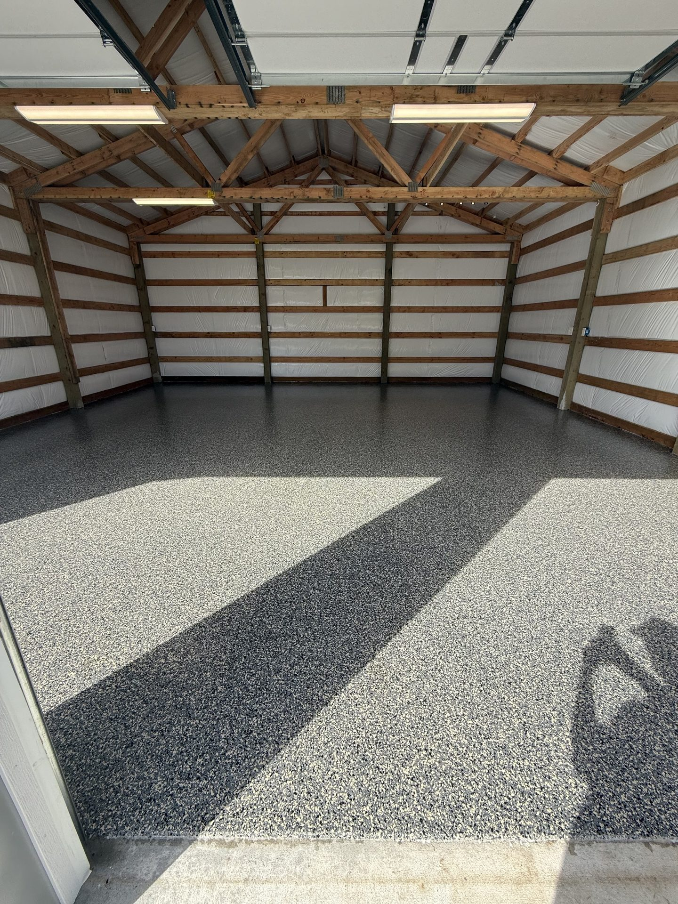

City halls, courthouses, community centers, and public interiors need floors that stay presentable without demanding constant patching, waxing, or replacement.
Public buildings need to look orderly and professional while holding up to daily foot traffic, janitorial routines, events, carts, and public wear.
Administrative buildings need a finish that looks clean and intentional for staff, visitors, and public meetings.
High-traffic corridors and entry points benefit from seamless systems that resist wear and reduce constant patchwork.
Community spaces often need durable finishes that still feel presentable for public programs and shared use.
Solid-color systems keep civic interiors looking organized and easier to maintain.

Quartz can be a strong fit where extra texture and durability matter.

Decorative resin systems can elevate shared spaces without losing durability.
This page targets city hall, courthouse, community center, and government building terms that would be diluted on a single broad service page.
The content is framed around lifecycle value, phasing, and high-traffic room types that matter to public buyers.
Answer-oriented sections make it easier for search and AI summaries to pull the page into civic flooring comparisons.
Public buildings often use epoxy flooring because it creates a seamless, easy-to-clean surface with lower maintenance needs than carpet, VCT, or tile in high-traffic spaces.
Yes. We can plan phased scheduling around public access, staff circulation, and event calendars so the building stays usable during the project.
Yes. Solid, flake, and quartz systems can all be selected to support cleaner wayfinding, a professional appearance, and durable long-term performance in civic spaces.
If you need government building flooring for a city hall, courthouse, public corridor, or community-use facility, we can walk the site and recommend systems by traffic pattern and finish expectation.